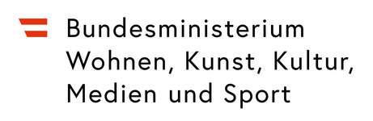

Lelio
Six songs. Six poets. One journey through memory, exile, and the refusal of simplification.
Six songs. Six poets. One journey through memory, exile, and the refusal of simplification.
The album brings together poems by Rose Ausländer, Theodor Kramer, Mimi Grossberg, Paul Elbogen, Jura Soyfer, and Erich Fried — writers whose lives and work were shaped by exile, displacement, and the upheavals of the twentieth century.
What surprised us while working with these texts was how little had aged.
They ask questions that remain painfully familiar:
What does it mean to belong somewhere?
What remains when the ground shifts?
How does one stay internally honest when belonging becomes complicated?
The album presents the poems not as isolated literary works but as parts of a larger inner journey. It does not attempt to explain history or judge nations. Instead, it creates space for reflection — an invitation to sit with complexity rather than resolve it.
The central idea is the refusal of simplification — people reduced to nationality, identity reduced to labels, history reduced to clear narratives.
Europe has always been a place of movement — people travelling, settling, carrying their languages and traditions with them, mixing them with what they found. The musicians who made this album are part of that story. Different backgrounds, different routes, different things brought along and left behind. That is where the sound comes from.
The texts shaped the music as much as the musicians did. Each poem suggested something — a tempo, a texture, a feeling that couldn't quite be named but could be played. The musicians heard those suggestions and followed them, finding connections between what the poets had written and what they themselves had always carried. The result is something that belongs to no single tradition, and to all of them at once.


Lelio was made possible with the generous support of the Austrian Federal Ministry of Arts, Culture, Civil Service and Sport, and the City of Graz. We are grateful for their commitment to cultural life and to the voices that deserve to be heard.

For bookings, press enquiries, or any questions about the project.